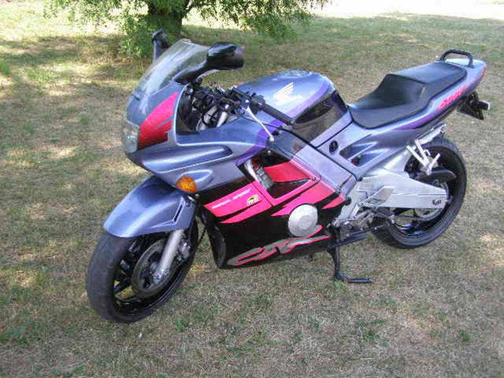

De motor is klaar voor gebruik!
Nu vele dagen werken in de garage is het dan eindelijk zo ver. De motor is weer klaar om terug de weg op te gaan. Het kostte dan wel wat moeite, maar dan heb je ook wat. Na een (zeer) grote beurt is hij weer tip-top in orde. Een hoop dingen zijn vervangen en nagekeken, niet alleen de standaard onderhouds onderdelen. Nee, ook de banden, wiellagers, carburateurs, voorvorken en meer zijn aan de beurt geweest. Na een kleine tegenslag met een olielekje dat achteraf nog gemaakt moest worden rijdt hij nu weer heerlijk! 23:40 | 29-5-2016 Categorieën: Motor, Techniek, Toeren, Onderhoud, Zomer
Inval op kantoor bij Google in Parijs.
Deze week heeft de Franse belastingdienst een inval gedaan bij het kantoor van Google in Parijs. De fiscale inlichtingendienst kreeg het vermoeden dat Google jarenlang belastingen heeft ontdoken of ontweken. Het moederbedrijf van Google, Alphabet betaald op het Europese vaste land al nauwelijks belasting. Dit komt omdat zij bijna al hun inkomsten in Ierland aangeven. Als Google schuldig wordt gevonden aan belastingfraude zal ze een boete van ruwweg 10 miljard Euro verwachten. 22:13 | 28-5-2016 Categorieën: Geld, Europa, Fraude, Belasting, Frankrijk
Monsters knallen in een nieuw jasje
Ooit begonnen als een immens populair spel in de jaren '90 is het nu terug van weggeweest. Doom natuurlijk, een van de eerste shooters die iedereen wel kent of anders zeker zou moeten kennen! Van de originele ontwikkelaar Id Software is weinig meer over, maar dat veranderde toen Bethesda ingreep. Onder hun leiding is er nu dus een compleet nieuwe versie van de populaire shooter uitgebracht. Voor iedereen die houdt van bloed, knallen, stampen en een gezonde dosis humor is de nieuwe Doom een must! 20:53 | 27-5-2016 Categorieën: Games, Doom, Shooter, Nieuw, Oldschool